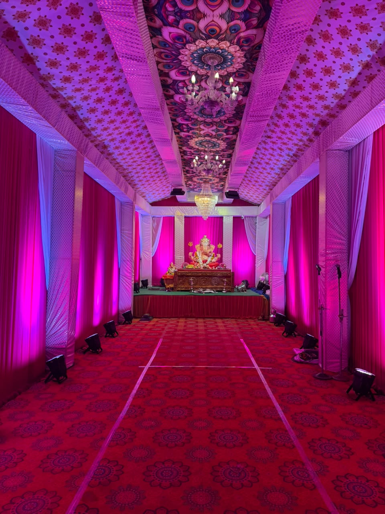
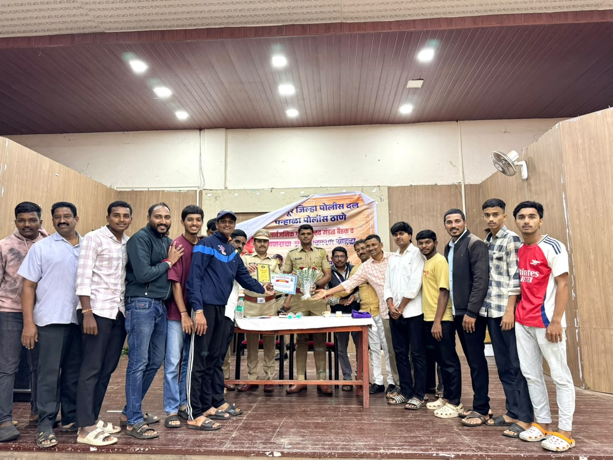
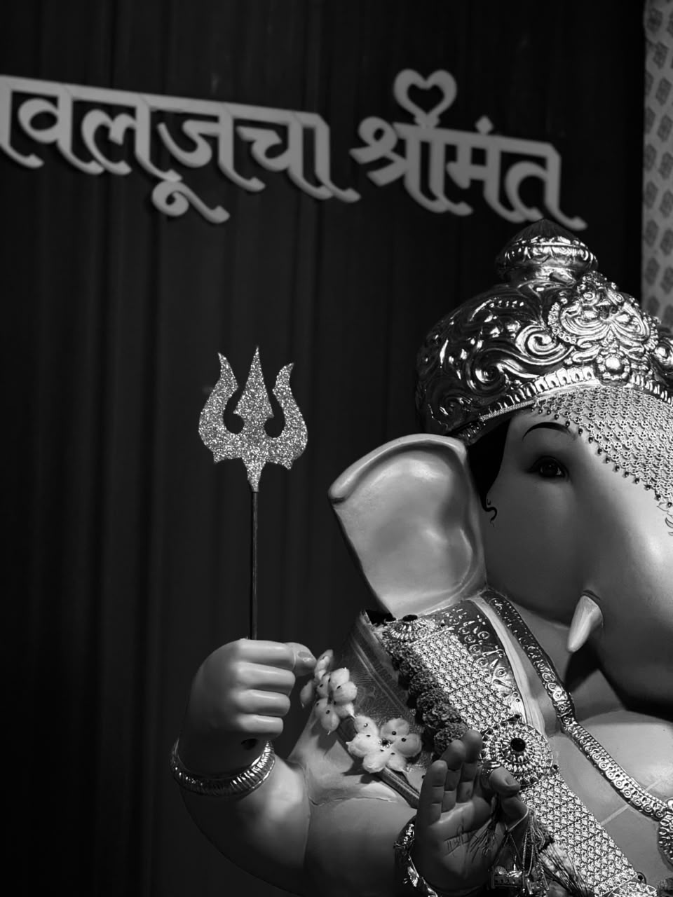
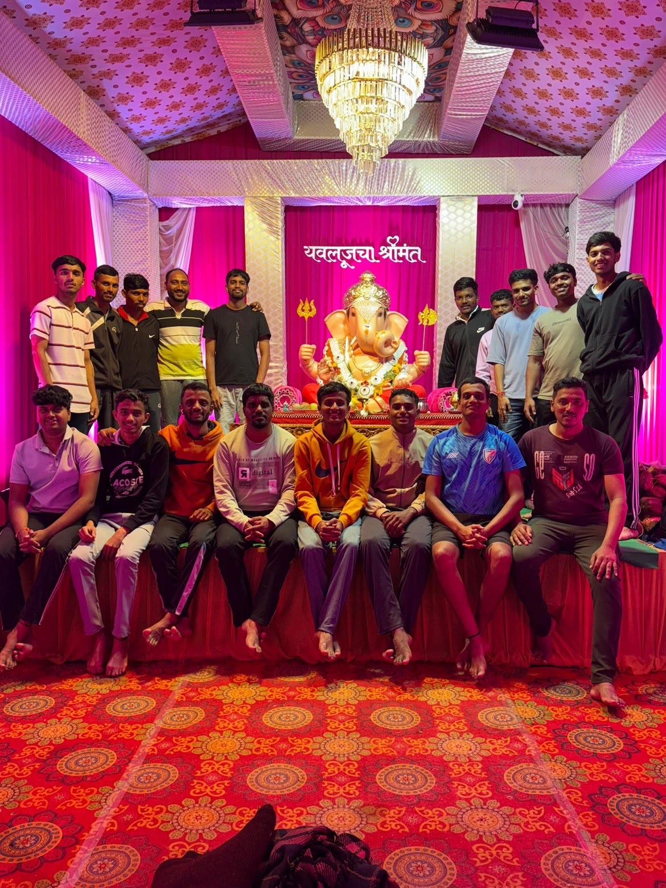
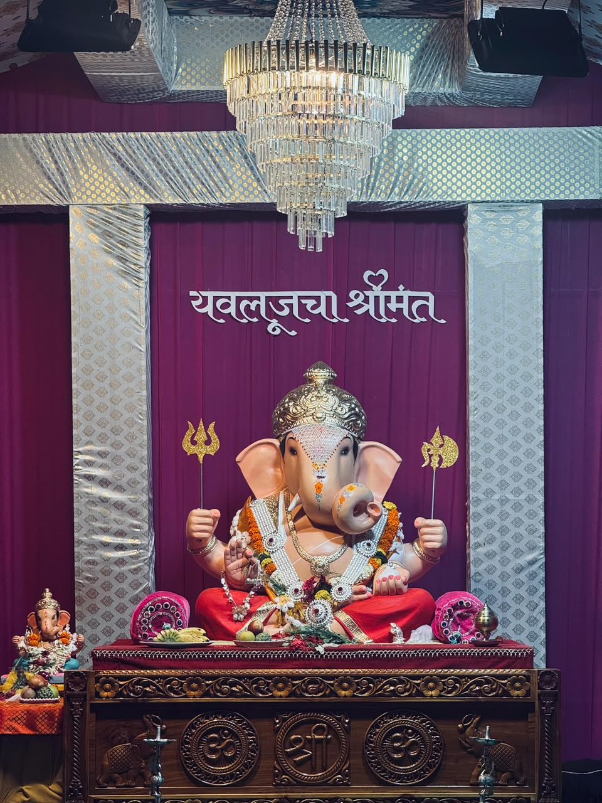
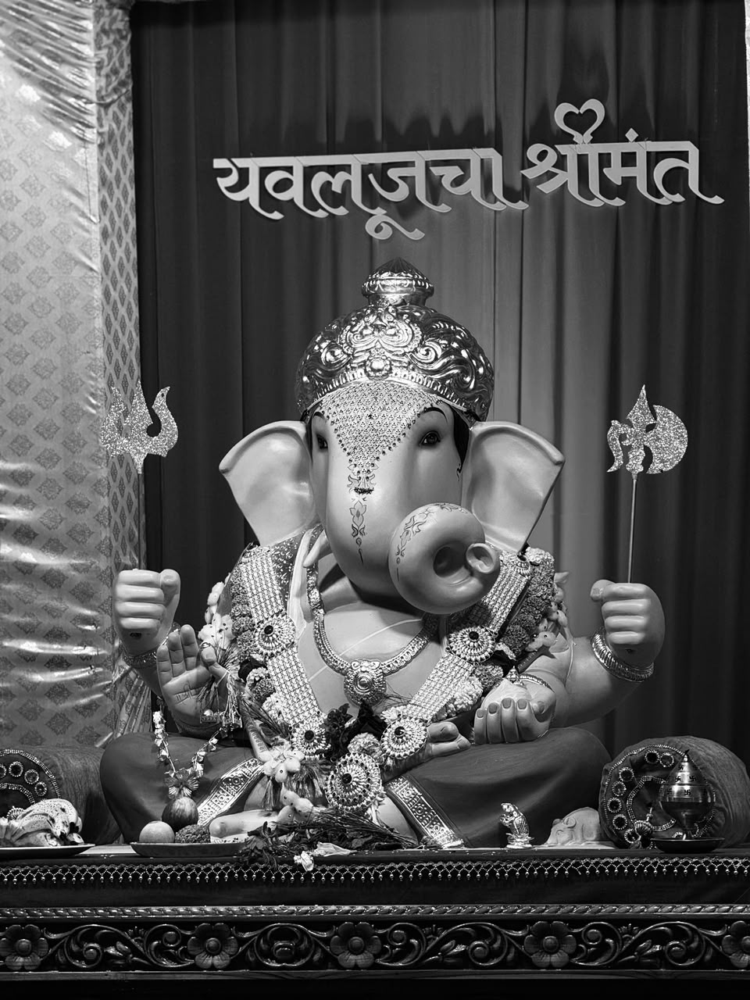

गणेशोत्सव
श्री गणरायाची भक्तिभावाने आराधना आणि पारंपरिक उत्सव.
॥ गणपती बाप्पा मोरया ॥
परंपरेचा अभिमान • संस्कृतीची ओळख • तरुणाईची ताकद • समाजसेवेची बांधिलकी

भक्ती, शिस्त आणि उत्साह यांचा सुंदर संगम म्हणजे वेताळ तालीम. श्री गणरायाच्या आशीर्वादाने प्रत्येक उपक्रमात एकता, सकारात्मकता आणि समाजहिताचा विचार जपण्याचा आमचा प्रयत्न आहे.
नव्या पिढीच्या उत्साहाला परंपरेची जोड देत संस्कृती, क्रीडा, शिस्त आणि सामाजिक बांधिलकी यांना प्रोत्साहन देणारे व्यासपीठ.
श्री गणरायाची भक्तिभावाने आराधना आणि पारंपरिक उत्सव.
ढोल-ताशा, आरती, सांस्कृतिक कार्यक्रम आणि स्थानिक परंपरांचे जतन.
शिस्त, व्यायाम, क्रीडा आणि तरुणांच्या सर्वांगीण विकासाला प्रोत्साहन.
स्वच्छता, पर्यावरणपूरक उपक्रम आणि जनजागृतीचा संदेश.
गरजूंसाठी मदत, समाजहिताचे उपक्रम आणि सकारात्मक सहभाग.
तरुणांना एकत्र आणून परिसरातील सामाजिक नाते अधिक मजबूत करणे.





गणपती बाप्पा मोरया! 🙏
स्थापना: ०१ जानेवारी २०२६
उद्देश: संस्कृती • क्रीडा • एकता • सेवा
ब्रीदवाक्य: ना भूतो ना भविष्यति